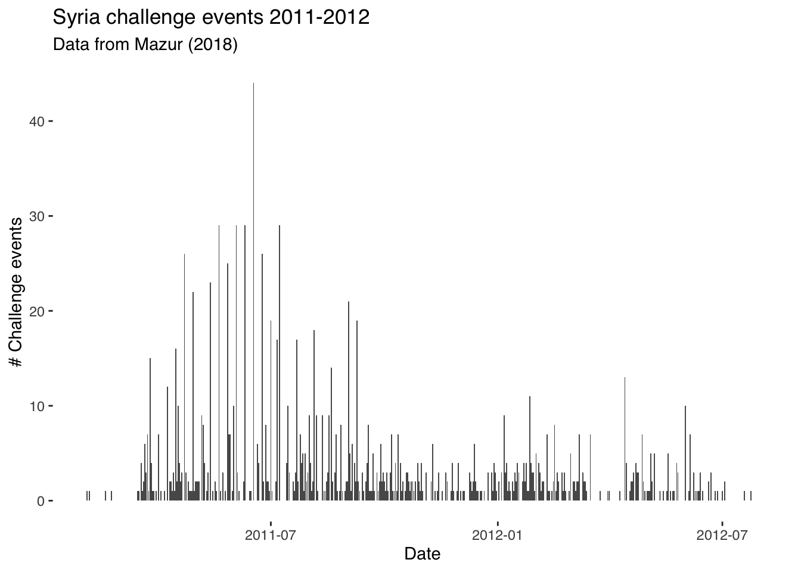
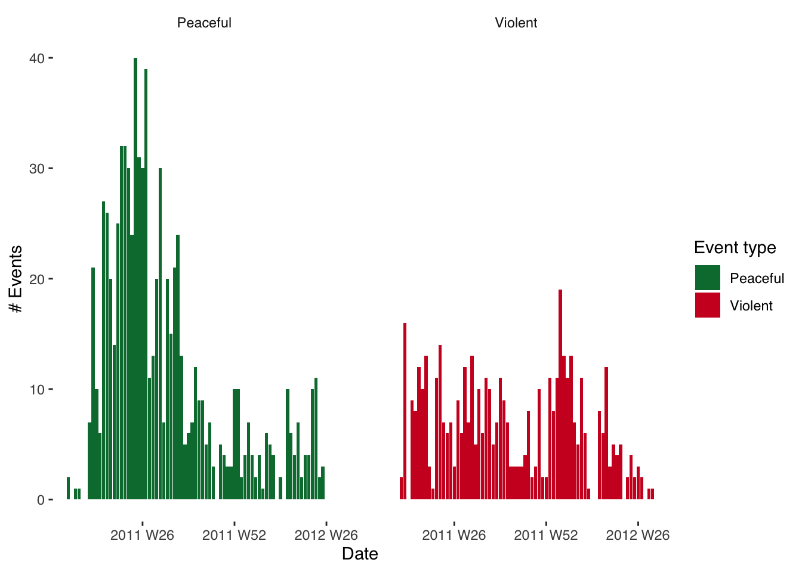
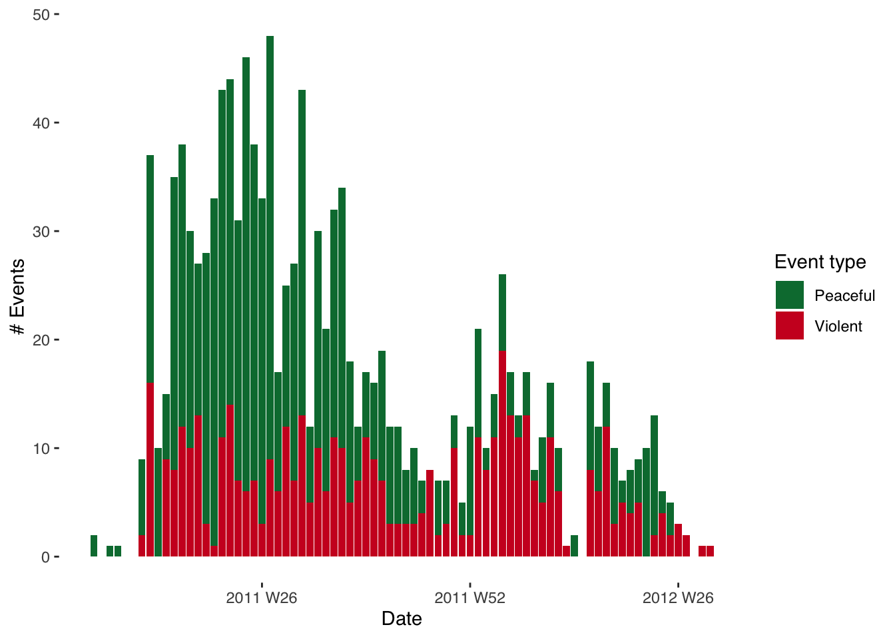
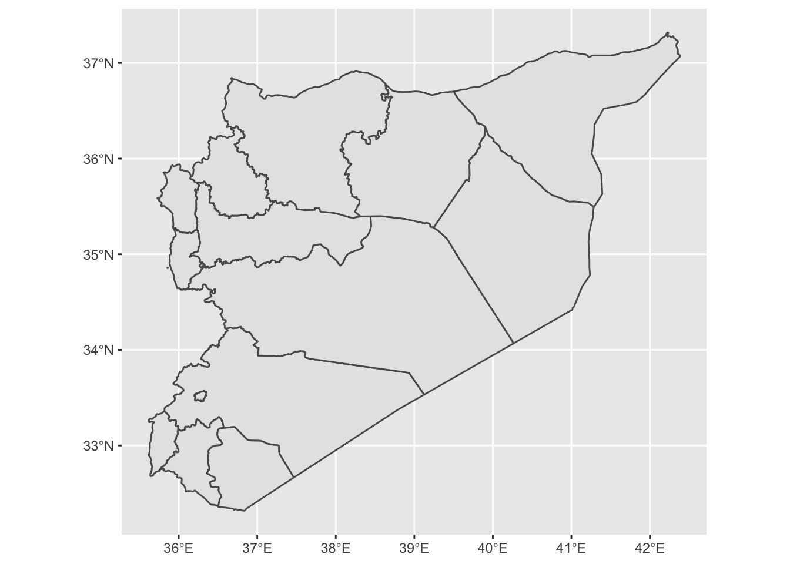
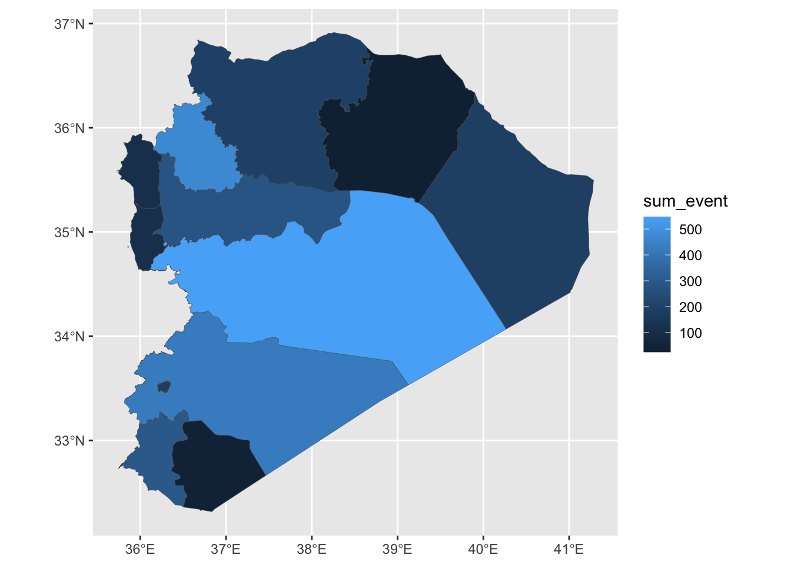
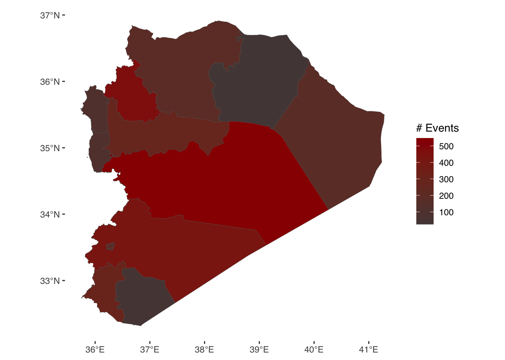

Week 2 Exercise
Analysing protest in the Syrian Revolution
This week we are analysing event data. Event data takes multiple forms, as we saw from the readings this week. Often, it takes the form of so-called “event catalogues”. See this article by Charles Tilly for an overview of their use and some theoretical reflections on what they can teach us. The data we will be using this week comes from a recently published article by Kevin Mazur on the patterns of protest (or “challenge”) seen during the early stages of the 2011 Syrian Uprising. The original replication materials can be found here. Download them from here if you want to get all of the files. Alternatively, you can download them from my GitHub page as below.
Read in the data
library(tidyverse)
library(ggthemes)
library(tsibble)
library(sf)
syr_data <- read.csv("https://raw.githubusercontent.com/cjbarrie/teaching_material/50588a5f9ae7f1a3a343c7bdcef8df7acd8f38c3/event_db.csv",
stringsAsFactors=F)Let’s start by viewing the dataset. We can see that it contains information on the challenge events in the early stages of the Syrian Revolution described by Mazur in the case study article we looked at for this week.
And then we’ll check to see how each variable is stored:
## 'data.frame': 2954 obs. of 26 variables:
## $ l4_pcode : chr "C1001" "C1001" "C1001" "C1001" ...
## $ date_start : chr "2011-02-02" "2011-02-04" "2011-02-17" "2011-02-22" ...
## $ ch_pcfl : int 1 1 1 1 1 1 1 0 0 0 ...
## $ ch_sviol : int 0 0 0 0 0 0 0 0 0 0 ...
## $ ch_cviol : int 0 0 0 0 0 0 0 1 0 0 ...
## $ st_crctrl : int 1 0 1 1 0 1 1 0 0 0 ...
## $ st_tactrl : int 0 0 0 0 0 0 0 0 0 0 ...
## $ st_confront: int 0 0 0 0 0 0 0 1 0 0 ...
## $ st_destroy : int 0 0 0 0 0 0 0 0 0 0 ...
## $ al_nviol : int 0 0 1 0 0 1 0 0 1 1 ...
## $ al_viol : int 0 0 0 0 1 0 0 0 0 0 ...
## $ time : int 1 3 16 21 42 43 45 420 315 286 ...
## $ l1_pcode : chr "SY01" "SY01" "SY01" "SY01" ...
## $ l1_ar : chr "مدينة دمشق" "مدينة دمشق" "مدينة دمشق" "مدينة دمشق" ...
## $ l1_en : chr "Damascus" "Damascus" "Damascus" "Damascus" ...
## $ l2_pcode : chr "SY0100" "SY0100" "SY0100" "SY0100" ...
## $ l2_ar : chr "مدينة دمشق" "مدينة دمشق" "مدينة دمشق" "مدينة دمشق" ...
## $ l2_en : chr "Damascus" "Damascus" "Damascus" "Damascus" ...
## $ l3_pcode : chr "SY010000" "SY010000" "SY010000" "SY010000" ...
## $ l3_ar : chr "مدينة دمشق" "مدينة دمشق" "مدينة دمشق" "مدينة دمشق" ...
## $ l3_en : chr "Damascus" "Damascus" "Damascus" "Damascus" ...
## $ l4_ar : chr "دمشق" "دمشق" "دمشق" "دمشق" ...
## $ l4_en : chr "Damascus" "Damascus" "Damascus" "Damascus" ...
## $ p1 : int 1 1 1 1 1 1 1 0 0 0 ...
## $ p2 : int 0 0 0 0 0 0 0 0 1 1 ...
## $ p3 : int 0 0 0 0 0 0 0 1 0 0 ...Time-series plots
We can see that it contains columns on the type of challenge events seen over time as well as the locations and dates of their occurrence. We will first create a ‘time series’ plot of events over time. Like last week, we first wrangle the data into an appropriate format for visualizing it in this way.
Since each row represents an event, we first create a variable, which we’ll name event and that records solely so-called “challenger” events (as opposed to regime repression events, which are also included in the dataset). The code to do this requires us to name a new variable in the original event dataset and sum together two columns in the event dataset named ch_pcfl and ch_sviol, which contain 1s and 0s denoting whether the challenge event was peaceful or violent.
As with the survey data we studied last week, we can then wrangle and reshape this data into a format suitable for a timeseries plot (essentially a graph of events over time). For this, we need to know first the number of events witnessed per day. We can see in the dataset that the date is recorded in yyyy-mm-dd format. This makes conversion to an R-readable date pretty straightforward. For more practice on working with dates in R, see this online tutorial. To make sure this date is readable in R, we simply type:
To make sure these have converted properly we can have a glimpse at the data using the glimpse() function, which is part of the tidyverse package.
## Date[1:2954], format: "2011-02-02" "2011-02-04" "2011-02-17" "2011-02-22" "2011-03-15" "2011-03-16" "2011-03-18" "2012-03-27" "2011-12-13" "2011-11-14" "2011-03-29" "2011-11-09" "2011-07-21" "2012-01-27" "2012-01-03" ...As in weeks past, all we are doing here is passing an existing object—the vector (i.e., column) of dates—through a function, this time called as.Date (a function from base R; i.e., you don’t need any extra packages to run this command), which translates the date into R-readable format.
We can then begin to wrangle the data into a format appropriate for visualizing timeseries data. In the below, we subset the original event dataset, summing the events by date to arrive at a daily count of challenge events.
Using the tidyverse
Here, we’re using so-called “pipe operators”. You have already encountered the subsetting function subset() in your labs. We also used these once or twice in the coding sheets last week. The tidyverse is essentially a more intuitive way of reshaping data. I basically only use this for wrangling (reshaping) data. For a good tutorial showing its potential for this, see this page. Basically pipe operators “pipe” (or pass on) what is on the left-hand side to what is on the right, and so on in turn. In this respect, it is a more intuitive way to reshape data than the methods provided in base R. So what are we doing here? The first part of this code syr_events_ts simply names the new subset of data we’re creating. To this we’re passing (with the <- operator) the already imported syr_data dataframe. But instead of just passing this object, we’re telling R to reshape it (the code on the right-hand side after the pipes) before passing it back to our new syr_events_ts dataframe. Here, we’re saying: take syr_data, group that data by by date (group_by(date), then sum the events by date summarize(sum_event = sum(event)). Then this is all passed back to (stored as) the object syr_events_ts. Have a look at the new dataframe by typingView(syr_events_ts). You’ll see that it shows a series of dates alongside the summed event values.
We can then plot a timeseries of challenge events by date using the ggplot2 package that we used last week. Note that we’re using here the theme_tufte() styling option that comes with the ggthemes package. This is solely to make the graph look nicer!
ggplot(data = syr_events_ts,
aes(x=date, y = sum_event)) +
geom_bar(stat = "identity") +
theme_tufte(base_family= "Helvetica") +
labs(title = "Syria challenge events 2011-2012",
subtitle = "Data from Mazur (2018)",
y = "# Challenge events",
x = "Date")
Using ggplot
So what’s going on here? ggplot commands basically just require you first to specify what dataframe we’re using; i.e., ggplot(syr_events_ts, and after the comma we have a section where we specify our “aesthetic mappings” (or aes). In other words, this is where we specify what we want on the x- and y-axis. Given that this is a timeseries plot, we have date on the x- (horizontal) axis and the sum of events on the y-axis. We then specify what type of graph we want. Here, we select geom_line as we want a line connecting the value of observations over time. Everything after geom_line is included just to specify labels and the theme (i.e., styling) of the graph. Remove this and see what happens. For graphs like this, in other words, we could have used only the following code:
A ggplot of this sort is composed of only two parenthetical elements, then. The first specifies what the data is and what is to be plotted. The second specifies type of graph. Here, we’re plotting with geom_line though we could also plot with geom_bar or geom_area. Try plotting with these different arguments and see which one gives the best visualization. Note: for reasons that are bit involved and you don’t need to worry out, when specifying geom_area and geom_bar you also need to add the stat = "identity" argument.
Working with dates
We might also want to look into the patterning of violent and peaceful events over time. To facilitate interpretation, we’ll first aggregate over a higher level of temporal aggregation and sum events by week. We can do this with the package tsibble (for more information on this package and another package–lubridate–useful for reshaping timeseries data, see these pages).
Before doing that, we need to generate a categorical variable that records whether or not the event in question is a peaceful or violent challenge event. For a good tutorial on recoding variables, see this page.
#generate categorical var. for event type:
syr_data$event_type[syr_data$ch_pcfl==1] <- "Peaceful"
syr_data$event_type[syr_data$ch_sviol==1] <- "Violent"
#generate timeseries data aggregated to date:
syr_events_ts <- syr_data %>%
group_by(event_type, date) %>%
summarize(sum_event = sum(event))Have a look at the new dataframe syr_events_ts and see how it is structured. Make sure it is clear in your mind how observations are being summed and grouped.
Next up we generate our “year-week” variable. Since events run over more than one year, we cannot just generate a week variable (i.e., taking values 1-52) as we will have the same number week repeated over multiple years. Summing over these weeks together would be nonsensical. Instead, we combine the week and year to make sure that we sum over e.g., week 12 of 2011 and not week 12 of 2011 and 2012.
# generate year-week column
syr_events_ts$yrweek <- yearweek(syr_events_ts$date)
# group again by year-week
syr_events_ts_week <- syr_events_ts %>%
group_by(event_type, yrweek) %>%
summarize(sum_event = sum(sum_event))Have a look at the dataframe syr_events_ts to see what the yrweek variable looks like.
Note that when we plot this data we specify na.omit() before the name of the data we’re plotting in order to remove missing observations. We also add the facet_grid argument to tell R to plot over a ‘facet’ (separate graph on same plot). In other contexts, we might facet by date, by location or otherwise. Here, we’re facetting by event type, which comes after a ~ (tilde) sign.
You’ll notice as well that we’ve added fill = event_type to the aesthetic (aes) components of our plot. This just means that each event type will have a different color associated with it. Try adding and removing components in the plot to work out which parts are responsible for which elements of the graph. Try also changing the fill option to shape and see what results. You’ll find a great website to use when selecting hex colours here.
ggplot(data = na.omit(syr_events_ts_week),
aes(x = yrweek, y = sum_event,
fill = event_type)) +
geom_bar(stat="identity") +
facet_wrap(~ event_type) +
theme_tufte(base_family = "Helvetica") +
scale_fill_manual(values = c("#007A3D", "#CE1126")) +
labs(fill="Event type", x="Date", y="# Events")
It might, however, be more informative to plot these two graphs on top of each other. This is achieved very straightforwardly. All we need to do, instead of facetting, is to add a ‘fill’ argument and to use event type as the variable by which we’re filling. The graphs will then be plotted on top of eachother.
ggplot(data = na.omit(syr_events_ts_week),
mapping = aes(x = yrweek, y = sum_event,
fill = event_type)) +
geom_bar(stat = "identity", alpha=1) +
theme_tufte(base_family = "Helvetica") +
scale_fill_manual(values = c("#007A3D", "#CE1126")) +
labs(x="Date", y="# Events", fill="Event type")
Visualizing data on maps:
Disclaimer: in previous years, this section was deemed a bit too advanced. I really urge you to give this a go though: especially as we are going to be talking about, and working with, spatial data next week. On the surface, mapping spatial data looks challenging. But in essence we are just doing similar things here to what we’ve done above and in the previous week. The difficulty comes in the forms of data used (shapefiles are notoriously messy) and in joining together (“merging”) different forms of data. Give it a go! And don’t be dissuaded if this proves too difficult at this stage. That’s what my office hours are for :)
There are several excellent resources you can use to learn more about mapping in R. The first and best is Robin Lovelace’s book Geocomputation with R, which he has made freely available here.
All we need to plot a map when using this sort of data is to go through three easy steps. We first need to identify the unit over which we’re mapping; i.e., are we mapping over districts, governorates, provinces etc.? In the below, we are mapping over each of the fourteen governorates of Syria.
We next need to obtain what is known as a ‘shapefile’. This is simply the format of file (overly complicated and in need of reforming) most commonly used to store GIS data. In this example, it is a set of polygons with associated coordinates that map out the governorates of Syria. But you don’t need to worry too much about the complexities of how this data is stored. We can download shapefiles from several places. Here, I use the Humanitarian Data Exchange but diva-gis is also a good place to look.
For the purposes of this exercise you can download the shapefiles I use from my GitHub page here, making sure to download all of the syr_admin1 files with different file extensions (shapefiles come in multiple parts even though we only end up actually reading in the .shp file…).
You then need to make sure, once you’ve downloaded them, that they’re in your “working directory” when you read them from the RStudio Console. You can do this with the setwd() function. We read in the shapefile with a command included in the sf package.
## Reading layer `syr_admin1' from data source `/Users/christopherbarrie/Dropbox/Teaching/02_Github/MMES-Ox/MMES-2021/other_files/syr_admin1.shp' using driver `ESRI Shapefile'
## Simple feature collection with 14 features and 8 fields
## geometry type: MULTIPOLYGON
## dimension: XY
## bbox: xmin: 35.61394 ymin: 32.31644 xmax: 42.38504 ymax: 37.31914
## geographic CRS: WGS 84We can then use ggplot again to visualize these! The only difference from the above is that instead of specifying e.g. geom_bar() or similar we specify geom_sf as here we want to visualize an “sf” type object; i.e., spatial data.

Now we need to check how governorate names are recorded in the spatial data. Given that the shapefiles have been read into the R Console as an “sf” object we can view them in the same way as we would any dataframe object.
## [1] "Damascus" "Aleppo" "Rural Damascus" "Homs" "Hama" "Lattakia" "Idleb" "Al-Hasakeh" "Deir-ez-Zor" "Tartous" "Ar-Raqqa"
## [12] "Dar'a" "As-Sweida" "Quneitra"## [1] "دمشق" "حلب" "ريف دمشق" "حمص" "حماة" "اللاذقية" "إدلب" "الحسكة" "دير الزور" "طرطوس" "الرقة" "درعا" "السويداء" "القنيطرة"Now that we know the names of the governorates, we can prepare the data that we want to merge with this file. In merging, we are essentially attaching data to the shapefile so that it can be plotted. In this example, we are assigning events to particular geographical regions, or governorates, for the purposes of visualizing them spatially. Imagine this as essentially taking two spreadsheets containing different information and joining them together at the seams.
First, we sum events (and here we recode events as all events in the dataset) over the governorate identifier in the Mazur data (l1_en). We then give this column the same name as that used in the shapefile (NAME_EN) so that we can merge by this column.
syr_data$event <- 1
# get events by l1_en (governorate names)
syr_events <- syr_data %>%
group_by(l1_en) %>%
summarize(sum_event = sum(event)) %>%
rename(NAME_EN = l1_en)
#merge with event data
syr_shp_merged <- merge(syr_shp, syr_events, by="NAME_EN")Most of the above will be familiar. Subsetting the data uses a procedure pretty much identical to that used above except this time we are grouping by a geographical identifier (l1_en). Note how reshaping data looks pretty much the same regardless of what the type of data is and what we want to do with it—normally, we’re just summing over a relevant variable. We then rename this variable to NAME_EN so that it matches by the name of the relevant column in our spatial data.
Then we can merge the shapefile with the aggregated event data by typing syr_shp <- merge(syr_shp, syr_events, by="NAME_EN"). Here, we’re simply pasting the names of the two objects to be merged—syr_shp and syr_events—separated by commas and then specifying the name of the common identifier by writing by="NAME_EN".
We’re now ready to plot the map!

And given that this is just another ggplot object we’re working with, this means we can use the same styling options as we’ve seen above. The variable we are visualizing in the fill colour of our governorates is continuous (a count of events). This means it is appropriate to use a continuous color palette when styling this visualization. We can do this by specifying scale_fill_continous() and adding values for the colours we want to use. Here, we just need to provide “low” and “high” values, and the intervening colours will be selected automatically.
ggplot(syr_shp_merged) +
geom_sf(aes(fill=sum_event), lwd=.1) +
scale_fill_continuous(low = "#544545", high = "#990000") +
theme_tufte(base_family = "Helvetica") +
labs(fill = "# Events")
Coding tasks
Recode a new event type variable (using e.g., events beginning with the st_ prefix) as we did above, applying categorical codes to each type.
Produce a table of summary statistics for the Syria event dataset. Tip: research the stargazer package.
Plot a new map using a different type of event variable. Bonus task: restyle the map, changing e.g., colours, polygon line thickness, transparency etc. etc.